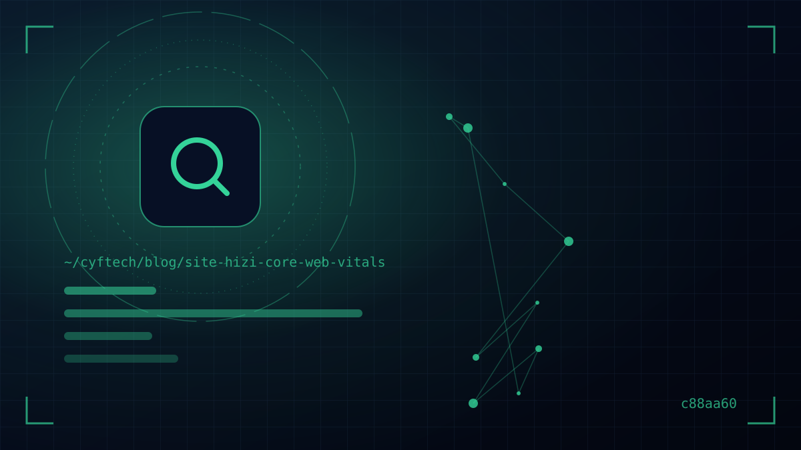

Ein Besucher kommt auf Ihre Website, aber die Seite lädt nicht; er tippt auf einen Button, aber nichts passiert; er beginnt zu lesen, und der Text rutscht nach unten. Jede dieser drei kleinen Enttäuschungen hat bei Google einen Namen: Core Web Vitals. Der klarste Weg, die Ladezeit zu messen und zu verbessern, führt über diese drei Metriken.
In diesem Beitrag erklären wir, was Core Web Vitals sind, welche aktuellen „guten“ Schwellenwerte für LCP, INP und CLS gelten, mit welchen Tools und wie Sie diese Werte richtig messen und welche Verbesserungen bei jeder Metrik am meisten bewirken.
Auch ohne eigenes Technikteam können Sie am Ende des Beitrags den Zustand Ihrer Website selbst prüfen und Ihrer Agentur oder Ihrem Entwickler die richtigen Fragen stellen.
Warum ist Ladezeit ein Thema für Kunden und für SEO?
Eine langsame Website kostet zuerst Nutzer. Wer bei mobiler Verbindung ein paar Sekunden auf einen leeren Bildschirm starrt, kehrt zur Suche zurück und klickt auf das nächste Ergebnis. Bei Traffic, den Sie über Anzeigen einkaufen, ist das direkter Geldverlust.
Auf Googles Seite gehören Core Web Vitals im Rahmen der „Nutzerfreundlichkeit von Seiten“ zu den Signalen, die die Ranking-Systeme berücksichtigen. Google Search Central sagt das ausdrücklich; im selben Dokument wird aber betont, dass die Relevanz der Inhalte weiterhin weit wichtiger ist. Eine schnelle Seite mit schwachem Inhalt steigt also nicht nach oben; zwischen zwei Seiten ähnlicher Qualität kann die Nutzererfahrung jedoch den Unterschied machen.
Geschwindigkeit allein macht Sie nicht zur Nummer eins – aber Langsamkeit wirft Sie leicht zurück.
Core-Web-Vitals-Metriken und Schwellenwerte 2026
Core Web Vitals bestehen aus drei Metriken. Jede misst einen anderen Aspekt der Nutzererfahrung: Laden, Interaktion und visuelle Stabilität.
| Metrik | Was wird gemessen? | Gut | Verbesserungswürdig | Schlecht |
|---|---|---|---|---|
| LCP (Largest Contentful Paint) | Zeit, bis das größte Bild oder der größte Textblock der Seite auf dem Bildschirm erscheint | ≤ 2,5 s | 2,5–4 s | > 4 s |
| INP (Interaction to Next Paint) | Zeit, bis die Seite auf Klicks, Tippen und Tastenanschläge sichtbar reagiert | ≤ 200 ms | 200–500 ms | > 500 ms |
| CLS (Cumulative Layout Shift) | Unerwartetes Verrutschen von Elementen beim Laden und während der Nutzung | ≤ 0,1 | 0,1–0,25 | > 0,25 |
Ein wichtiges Detail: Google bewertet diese Werte anhand des 75. Perzentils echter Nutzer. Mindestens 75 Prozent der Besuche müssen also innerhalb des „guten“ Schwellenwerts liegen. Damit eine Seite die Core Web Vitals besteht, müssen alle drei Metriken gut sein; ist eine schlecht, wird kein Durchschnitt gebildet.
Wie misst man Core Web Vitals: Felddaten und Labordaten
Der häufigste Fehler beim Messen ist, eine Entscheidung anhand eines einzigen PageSpeed-Werts zu treffen. Es gibt zwei Arten von Daten, und sie sagen Unterschiedliches aus:
- Felddaten (Field Data): Daten des Chrome UX Report (CrUX), gesammelt aus echten Erfahrungen von Chrome-Nutzern. Diese Daten berücksichtigt Google im Ranking; sie spiegeln die letzten 28 Tage wider.
- Labordaten (Lab Data): Ein Lighthouse-Test auf einem einzelnen simulierten Gerät mit simulierter Verbindung. Ideal zur Diagnose, zeigt aber nicht exakt die echte Nutzererfahrung. INP kann er nicht direkt messen; stattdessen betrachtet man die Total Blocking Time (TBT).
Welches Tool wofür?
- PageSpeed Insights: Zeigt für eine einzelne URL Feld- und Labordaten zusammen. Maßgeblich ist der obere Bereich zur „Erfahrung echter Nutzer“.
- Search Console — Core-Web-Vitals-Bericht: Teilt Ihre gesamte Website in Gruppen ähnlicher Seiten und zeigt, welche URLs auf Mobilgeräten und Desktop schlecht abschneiden.
- Chrome DevTools (Performance-Panel): Das Entwicklerwerkzeug, um die Ursache langsamer Interaktionen und Verschiebungen Zeile für Zeile zu finden.
- web-vitals-Bibliothek: Googles kleine JavaScript-Bibliothek, um echte Nutzermessungen an Ihr eigenes Analysetool zu senden.
LCP verbessern: den Hauptinhalt schneller zeigen
Auf den meisten Unternehmenswebsites ist das LCP-Element das große Bild im oberen Bereich (Hero) oder die Hauptüberschrift. Die LCP-Zeit setzt sich aus vier Teilen zusammen: erste Serverantwort (TTFB), Entdecken der Ressource, Herunterladen der Ressource und Rendern. In dieser Reihenfolge wird auch optimiert.
- Serverantwort beschleunigen: web.dev wertet eine TTFB von 0,8 Sekunden oder weniger als gut. Seiten-Caching, gutes Hosting und ein CDN senken diese Zeit deutlich.
- LCP-Bild früh auffindbar machen: Binden Sie das Bild direkt im HTML ein, nicht als CSS-Hintergrund oder per JavaScript, und priorisieren Sie es mit fetchpriority="high".
- Kein Lazy Loading für das obere Bild: Lazy Loading ist für Bilder unterhalb des sichtbaren Bereichs gedacht; beim Hauptbild verzögert es den LCP.
- Bild verkleinern: Mit WebP- oder AVIF-Format, passender Größe und srcset vermeiden Sie unnötig große Downloads auf Mobilgeräten.
- Render-blockierende Ressourcen reduzieren: Kritisches CSS vorziehen, ungenutztes CSS und synchron geladene Skripte entfernen, bei Schriften font-display: swap verwenden.
Den Einfluss von Hosting-Entscheidungen auf die Ladezeit haben wir unter Domain- und Hostingwahl in einem eigenen Beitrag behandelt.
INP verbessern: sofort auf Klicks reagieren
INP-Probleme entstehen meist, weil der Hauptthread (Main Thread) des Browsers mit JavaScript beschäftigt ist. Der Nutzer tippt auf das Menü, doch die Reaktion verzögert sich, weil der Browser gerade ein Analyseskript oder umfangreichen Slider-Code ausführt.
- Lange Tasks aufteilen: Zerlegen Sie JavaScript-Tasks über 50 ms; geben Sie dem Nutzer zuerst visuelles Feedback und erledigen Sie die schwere Arbeit danach.
- Drittanbieter-Skripte prüfen: Chat-Bubbles, Heatmap-Tools sowie mehrere Werbe- und Analyse-Tags sind die häufigsten INP-Übeltäter. Behalten Sie nur, was Sie wirklich nutzen, und laden Sie den Rest verzögert.
- DOM klein halten: Auf Seiten mit Tausenden Elementen wird das Neuzeichnen nach jeder Interaktion teuer.
- Plugin- und Theme-Last reduzieren: Ungenutzter Code, den fertige Themes auf jeder Seite laden, verlangsamt Interaktionen vor allem auf schwächeren Smartphones.
Hier wird die Wahl der Plattform entscheidend. Den Unterschied zwischen einer Website, die mit Plugins wächst, und einer schlanken, bedarfsgerecht programmierten Website haben wir im Beitrag WordPress oder individuelle Software ausführlich.
CLS verbessern: Verrutschen der Seite verhindern
Wenn die Zeile, die Sie gerade lesen, plötzlich nach unten rutscht oder der Button genau beim Klicken seine Position ändert – genau das misst CLS. Zum Glück sind die Lösungen meist einfach:
- Bildern und Videos Abmessungen geben: Mit den Attributen width und height oder CSS aspect-ratio reserviert der Browser den Platz im Voraus.
- Feste Flächen für Anzeigen, Banner und eingebettete Inhalte reservieren: Nachträglich geladene Cookie-Hinweise oder Aktionsleisten sollten den Inhalt nicht verschieben, sondern als Overlay darüber erscheinen.
- Schriftwechsel abfedern: Laden Sie die Webschrift vorab und halten Sie die Maße der Fallback-Schrift möglichst ähnlich.
- Für Animationen transform nutzen: Animieren Sie mit transform und opacity statt mit layoutwirksamen Eigenschaften wie top, left oder height.
Die häufigsten Geschwindigkeitsprobleme nach Website-Typ
Nicht jede Website ist aus demselben Grund langsam. Zusammengefasst nach Website-Typ sieht das Bild aus unseren Projekten so aus:
| Website-Typ | Häufigstes Problem | Wo zuerst nachsehen |
|---|---|---|
| Unternehmenswebsite mit Fertig-Theme | Schweres Theme, viele Plugins, große Slider-Bilder | Ungenutzte Plugins, Größe des Hauptbilds, Seiten-Caching |
| E-Commerce-Website | Produktbilder, Filter, viele Tracking- und Marketing-Tags | LCP der Kategorieseite, Drittanbieter-Skripte, INP der Warenkorb-Interaktionen |
| Single-Page-Application (React, Vue usw.) | Große JavaScript-Bundles, Inhalte entstehen spät im Browser | Serverseitiges Rendering oder Pre-Rendering, Code-Splitting |
| News- und Blog-Website | Nachträglich geladene Werbeflächen verschieben den Inhalt | Reservierte feste Flächen für Werbeplätze, CLS |
Diese Tabelle ist ein Ausgangspunkt; eine sichere Diagnose erfolgt immer durch Messung. Dennoch spart es Zeit im Gespräch mit dem Entwickler, zu wissen, wo das Problem wahrscheinlich liegt. Ist zum Beispiel in einem Onlineshop die Produktdetailseite schnell, die Kategorieseite aber langsam, liegt es meist daran, dass Dutzende gelistete Bilder gleichzeitig und in voller Größe geladen werden.
Wenn Sie ein schnelles, leichtes Erlebnis anstreben, das sich wie eine mobile App anfühlt, sollte das bereits in der Designphase besprochen werden. Jede nachträglich hinzugefügte „kleine“ Funktion zehrt am Performance-Budget.
Schritt-für-Schritt-Plan für eine schnellere Website
Statt alles gleichzeitig zu beheben, beginnen Sie mit dem, was am meisten bewirkt:
- Schritt 1 — Öffnen Sie in der Search Console den Core-Web-Vitals-Bericht und listen Sie die Seitengruppen auf, die mobil als „schlecht“ eingestuft sind.
- Schritt 2 — Testen Sie aus jeder Gruppe eine Beispiel-URL in PageSpeed Insights und notieren Sie, welche Metrik hakt.
- Schritt 3 — Lösen Sie zuerst Probleme auf Template-Ebene: Hunderte Seiten mit demselben Template werden mit einer einzigen Korrektur besser.
- Schritt 4 — Setzen Sie schnelle Erfolge wie Bilder, Caching und CDN um; gehen Sie danach JavaScript und Drittanbieter-Skripte an.
- Schritt 5 — Klicken Sie in der Search Console auf „Fehlerbehebung überprüfen“ und warten Sie, bis sich die Felddaten innerhalb von 28 Tagen aktualisieren.
Geschwindigkeit ist kein einmaliges Projekt, sondern ein Budget, das ständig verteidigt werden muss. Ein neues Plugin, ein großes Bild oder ein zusätzlicher Tracking-Code können die Erfolge in wenigen Wochen zunichtemachen. Fragen Sie daher vor jeder neuen Funktion: „Wie stark verlangsamt das die Seite?“ Wenn Sie die Rolle der Geschwindigkeit für die Sichtbarkeit in der Suche im größeren Zusammenhang sehen möchten, werfen Sie auch einen Blick auf unsere Checkliste für technisches SEO – es lohnt sich.
- Liegt der LCP auf Mobilgeräten unter 2,5 Sekunden?
- Liegt der INP unter 200 ms, und wurden unnötige Drittanbieter-Skripte entfernt?
- Liegt der CLS unter 0,1, und haben alle Bilder definierte Abmessungen?
- Wird das Hauptbild ohne Lazy Loading und priorisiert geladen?
- Sind die Bilder im WebP-/AVIF-Format und in passender Größe?
- Sind Seiten-Caching, Komprimierung und CDN aktiv?
- Wird der Core-Web-Vitals-Bericht in der Search Console regelmäßig überwacht?
Häufig gestellte Fragen
Was sind Core Web Vitals?
Core Web Vitals sind drei von Google festgelegte Metriken zur Messung der echten Nutzererfahrung: LCP für die Ladegeschwindigkeit, INP für die Reaktion auf Interaktionen und CLS für die visuelle Stabilität. Sie fließen in Googles Bewertung der Nutzerfreundlichkeit von Seiten ein.
Wie viele Sekunden sind ein guter LCP-Wert?
Laut Google gilt ein LCP von 2,5 Sekunden oder weniger als gut, über 4 Sekunden als schlecht. Bewertet wird anhand des 75. Perzentils echter Nutzerbesuche.
Warum hat INP FID abgelöst?
FID maß nur die Verzögerung der ersten Interaktion auf der Seite, und die meisten Websites bestanden diesen Test mühelos. INP verfolgt alle Interaktionen auf der Seite und meldet eine der langsamsten; daher spiegelt es die tatsächliche Nutzererfahrung besser wider. Die Änderung trat im März 2024 in Kraft.
Ist mein SEO schlecht, wenn der PageSpeed-Wert nicht 100 ist?
Nein. Der Lighthouse-Wert ist ein Labortest und kein direktes Ranking-Signal. Entscheidend ist, dass LCP, INP und CLS in den echten Nutzerdaten innerhalb der guten Schwellenwerte liegen. Eine Seite mit 85 Punkten, aber guten Felddaten ist aussagekräftiger als ein Testergebnis mit 100 Punkten.
Wann wirken sich Core-Web-Vitals-Korrekturen aus?
Da die Felddaten auf den Nutzererfahrungen der letzten 28 Tage beruhen, dauert es etwa vier Wochen, bis Korrekturen vollständig in den Berichten erscheinen. In Labortests sehen Sie die Verbesserung dagegen sofort.
Fazit
Core Web Vitals reduzieren das Gefühl, das Ihre Website beim Besucher hinterlässt, auf drei Zahlen: Der Hauptinhalt soll in 2,5 Sekunden sichtbar sein, jeder Klick in 200 Millisekunden eine Reaktion finden und die Seite um weniger als 0,1 verrutschen. Diese Ziele erfordern meist keinen teuren Neubau, sondern eine richtige Diagnose und disziplinierte kleine Korrekturen.
Die von CYF Tech entwickelten Websites und Webanwendungen konzipieren wir von Anfang an mit einem Performance-Budget; bei bestehenden Websites übernehmen wir Core-Web-Vitals-Analysen und -Optimierungen. Wenn Sie gemeinsam herausfinden möchten, warum Ihre Website langsam ist, kontaktieren Sie uns.
- web.dev — Web Vitals
- web.dev — How the Core Web Vitals metrics thresholds were defined
- web.dev — Largest Contentful Paint (LCP)
- web.dev — Interaction to Next Paint (INP)
- web.dev — Cumulative Layout Shift (CLS)
- web.dev — Time to First Byte (TTFB)
- Google Search Central — Understanding Core Web Vitals and Google search results
- Google Search Central — Understanding page experience